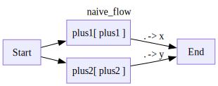
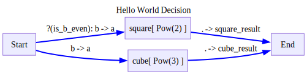
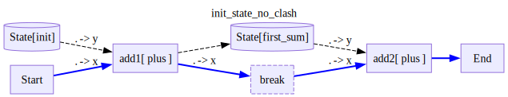
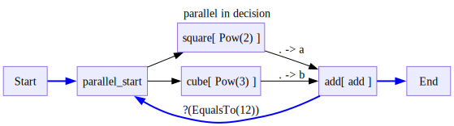
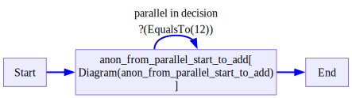
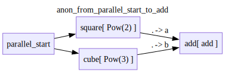
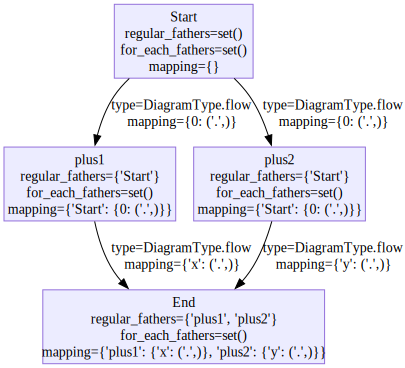

from time import sleepExample schemas
def plus1(x):
return x+1
def plus2(x):
return x+2
def mod2(x):
return x%2==0
def add(a,b):
return a+b
class Pow():
def __init__(self,power):
self.power = power
def __call__(self,a):
return a**self.power
def __str__(self):
return f'Pow({self.power})'
def is_b_even(obj):
return obj['b']%2==0with Define('naive_flow',type='flow') as NaiveFlow:
V('plus1',plus1,inputs=['Start'],outputs=['End(x=.)'])
V('plus2',plus2,inputs=['Start'],outputs=['End(y=.)'])
NaiveFlow.draw(direction='LR')
with Define('Hello World Decision',type='decision') as NaiveDecision:
V('square',Pow(2),inputs=[
('Start(a=b)',is_b_even),
],
outputs=['End(square_result=.)'])
V('cube',Pow(3),inputs=['Start(a=b)'],outputs=['End(cube_result=.)'])
NaiveDecision.draw(direction='LR')
def plus(x,y):
return x+y
with Define('init_state_no_clash',type='decision') as WithState:
V('add1',plus,
inputs=['Start(x)','State/init(y)'],
outputs=['State/first_sum']
)
V('break',is_break=True,inputs=['add1(x)'])
V('add2',plus,
inputs=['break(x)','State/first_sum(y)'],
outputs=['End']
)
WithState.draw(direction='LR')
def add(a,b):
return a+b
class Pow():
def __init__(self,power):
self.power = power
def __call__(self,a):
return a**self.power
def __str__(self):
return f'Pow({self.power})'
class Add():
def __init__(self,a):
self.a = a
def __call__(self,b):
return self.a+b
def __str__(self):
return f'Add({self.a})'
class IsModulo():
def __init__(self,mod):
self.mod = mod
def __call__(self,a):
return a%self.mod==0
def __str__(self):
return f'IsModulo({self.mod})'
class EqualsTo():
def __init__(self,value):
self.value = value
def __call__(self,a):
return a==self.value
def __str__(self):
return f'EqualsTo({self.value})'with Define('parallel in decision',type='decision') as Compound:
V('parallel_start',inputs=['Start'])
# all edges defined within a flow scope are automatically added as flow edges
with Scope('flow'):
V('square',Pow(2),inputs=['parallel_start'])
V('cube',Pow(3),inputs=['parallel_start'])
V('add',add,inputs=['square(a)','cube(b)'])
# we can override the scope and define an edge type explicitly
E('add->parallel_start',cond=EqualsTo(12),type='decision')
E('add->End')
Compound.draw(direction='LR')
Compound.draw(direction='LR',factored=True)

Accessing state
simplify_output
simplify_output (input_)
Diagram.set_state
Diagram.set_state (key, value)
Diagram.get_state
Diagram.get_state (key)
d = WithState()
assert d['add1'] == d['add2']
assert d['add1'] == plus
d.set_state('first_sum',1)
assert d.get_state('first_sum')==1
# d.draw()d = Compound()
d['cube'] = Pow(4)
assert d['cube'].__class__ == Pow
assert d['cube'].power == 4with Define('complex_state',type='decision') as D:
V('End',inputs=['Start'],
outputs = [
'state/x(0=a)',
'state/y(0=b)'
])
D.draw()
d=D()
with checkLogs():
d._set_node_output('End',{'a':1,'b':2,'c':3})
assert d.state.model_dump() == {'x':1,'y':2}
__main__ - DEBUG - Setting state 'x' based on output {'a': 1, 'b': 2, 'c': 3}
after mapping it to 1
with mapping {0: ('a',)}
__main__ - DEBUG - Setting state 'y' based on output {'a': 1, 'b': 2, 'c': 3}
after mapping it to 2
with mapping {0: ('b',)}compute_node_input
compute_node_input (node, previous_outputs, state, raw_input=False, partial=False)
Prepare the input for the next node execution
Traces
pformat_yaml
pformat_yaml (data:Any, width:int=80, max_lines:int=10)
*Stream writes items to a YAML file with smart handling of long strings.
Args: file_path: Path to output file data_iterator: Iterator/generator that yields YAML-serializable items width: Maximum line width for text wrapping calculation*
LongStringSafeYAMLDumper
LongStringSafeYAMLDumper (*args, width=80, max_lines=10, **kwargs)
Custom YAML dumper that handles long strings intelligently
sample_data = {
"step": "user_query",
"short_text": "What is the capital of France?",
"long_text": """This is a much longer piece of text that spans multiple lines and contains detailed information about something important. It might be a log entry or some other kind of detailed output that we want to format nicely in our YAML file.""",
"too_long_text": """This is a much longer piece of text that spans multiple lines and contains detailed information about something important. It might be a log entry or some other kind of detailed output that we want to format nicely in our YAML file. This is a much longer piece of text that spans multiple lines and contains detailed information about something important. It might be a log entry or some other kind of detailed output that we want to format nicely in our YAML file.""",
"metadata": {
"timestamp": "2024-03-21T10:30:00Z",
"session_id": "abc123" ,
},
"list_of_small_items": [
"item1",
"item2",
"item3",
"item4",
"item5",
],
"list_of_large_items": [
{"a":1,"b":2,"c":3,"d":4,"e":5,"f":6,"g":7,"h":8,"i":9,"j":10},
{"a":'b'*120},
]
}
res = pformat_yaml(sample_data,max_lines=4)
print(res)
# yaml_path = Path('test.log.yaml')
# yaml_path.write_text(res)
# !cat test.log.yaml
# os.unlink(yaml_path)step: user_query
short_text: What is the capital of France?
long_text: |-
This is a much longer piece of text that spans multiple lines and contains
detailed information about something important. It might be a log entry or some
other kind of detailed output that we want to format nicely in our YAML file.
too_long_text: |-
This is a much longer piece of text that spans multiple lines and contains detailed information about something important. It might be a log entry or some other kind of detailed output that we want to format nicely in our YAML file. This is a much longer piece of text that spans multiple lines and contains detailed information about something important. It might be a log entry or some other kind of detailed output that we want to format nicely in our YAML file.
metadata:
timestamp: '2024-03-21T10:30:00Z'
session_id: abc123
list_of_small_items: [item1, item2, item3, item4, item5]
list_of_large_items:
- a: 1
b: 2
c: 3
d: 4
e: 5
f: 6
g: 7
h: 8
i: 9
j: 10
- a: bbbbbbbbbbbbbbbbbbbbbbbbbbbbbbbbbbbbbbbbbbbbbbbbbbbbbbbbbbbbbbbbbbbbbbbbbbbbbbbbbbbbbbbbbbbbbbbbbbbbbbbbbbbbbbbbbbbbbbbb
Trace
Trace (run_uid:str, node_uid:str, node_name:List[str], input_idx:List[Optional[int]]=[None], node_func:Optional[Any]=None, input_state_keys:Optional[set[str]]=None, input_:Any, output:Optional[Any]=None, run_type:stringdale.base.DiagramType, start_time:Optional[datetime.datetime]=None, end_time:Optional[datetime.datetime]=None)
*!!! abstract “Usage Documentation” Models
A base class for creating Pydantic models.
Attributes: class_vars: The names of the class variables defined on the model. private_attributes: Metadata about the private attributes of the model. signature: The synthesized __init__ [Signature][inspect.Signature] of the model.
__pydantic_complete__: Whether model building is completed, or if there are still undefined fields.
__pydantic_core_schema__: The core schema of the model.
__pydantic_custom_init__: Whether the model has a custom `__init__` function.
__pydantic_decorators__: Metadata containing the decorators defined on the model.
This replaces `Model.__validators__` and `Model.__root_validators__` from Pydantic V1.
__pydantic_generic_metadata__: Metadata for generic models; contains data used for a similar purpose to
__args__, __origin__, __parameters__ in typing-module generics. May eventually be replaced by these.
__pydantic_parent_namespace__: Parent namespace of the model, used for automatic rebuilding of models.
__pydantic_post_init__: The name of the post-init method for the model, if defined.
__pydantic_root_model__: Whether the model is a [`RootModel`][pydantic.root_model.RootModel].
__pydantic_serializer__: The `pydantic-core` `SchemaSerializer` used to dump instances of the model.
__pydantic_validator__: The `pydantic-core` `SchemaValidator` used to validate instances of the model.
__pydantic_fields__: A dictionary of field names and their corresponding [`FieldInfo`][pydantic.fields.FieldInfo] objects.
__pydantic_computed_fields__: A dictionary of computed field names and their corresponding [`ComputedFieldInfo`][pydantic.fields.ComputedFieldInfo] objects.
__pydantic_extra__: A dictionary containing extra values, if [`extra`][pydantic.config.ConfigDict.extra]
is set to `'allow'`.
__pydantic_fields_set__: The names of fields explicitly set during instantiation.
__pydantic_private__: Values of private attributes set on the model instance.*import matht = Trace(
run_uid = '123',
node_uid = '456',
node_name = ['Start'],
input_idx = [None],
node_func = math.exp,
input_state_keys = set(),
input_ = {'foo':1},
output = 2,
run_type = DiagramType.decision,
start_time = datetime.now(),
end_time = datetime.now(),
)
t.pprint()---
name: Start
input:
foo: 1
output: 2
Diagram.prep_trace
Diagram.prep_trace (node, input_, output, type=<DiagramType.decision: 'decision'>, idx=None, start_time=None, end_time=None)
Running nodes
Diagram.run_subdiagram_iter
Diagram.run_subdiagram_iter (node, input_, subdiagram, idx=None)
Run a subdiagram as a node yields traces from the subdiagram returns the output of the subdiagram and the subdiagram itself
Diagram.run_node
Diagram.run_node (node, input_, idx=None)
Run Decision Diagrams
Diagram.arun_decision
Diagram.arun_decision (input_, state, **kwargs)
Diagram.choose_next_node
Diagram.choose_next_node (node, output)
Based on the output of the last node, choose the next node returns the next node to run, or None if we are at the end
Run Flow Diagrams
Diagram.update_state
Diagram.update_state (graph, node)
Diagram.can_generate_new_input
Diagram.can_generate_new_input (graph, node)
NodeState
NodeState (*values)
*Create a collection of name/value pairs.
Example enumeration:
class Color(Enum): … RED = 1 … BLUE = 2 … GREEN = 3
Access them by:
attribute access:
Color.RED <Color.RED: 1>
value lookup:
Color(1) <Color.RED: 1>
name lookup:
Color[‘RED’] <Color.RED: 1>
Enumerations can be iterated over, and know how many members they have:
len(Color) 3
list(Color) [<Color.RED: 1>, <Color.BLUE: 2>, <Color.GREEN: 3>]
Methods can be added to enumerations, and members can have their own attributes – see the documentation for details.*
Diagram.enqueue_task
Diagram.enqueue_task (node, input_, idx)
*Create appropriate task type and add to corresponding task dict. Handles AsyncIter initialization and tracks task creation time.
Args: node: Node to execute input_: Input data for the node idx: Execution index for the node tasks: Dict of regular tasks iterator_tasks: Dict of iterator tasks subdiagram_tasks: Dict of subdiagram tasks*
Diagram.handle_finished_task
Diagram.handle_finished_task (task)
*Handle a completed task and return node, trace, and outputs
Args: task: The completed asyncio task
Returns: Tuple of: - node: The node that completed - trace: The execution trace (or None) - outputs: List of outputs (or None)*
Diagram.enqueue_new_input
Diagram.enqueue_new_input (graph, node, father_node, new_father_outputs)
*Lets look at this example U.(x,y)->V.(a,b) V foreach a U is a stream node W.(z,w)->V.(c,d) V foreach d W is a regular node M.(a,b)->V.(e,f) V for each e,f, M is a stream node N.(a,b)->V.(g,h) V for each g,h, N is a regular node
We need to have all 8 of a,b,c,d,e,f,g,h Since W is regular, once we compute it, we portmap it to c,d and overide them Since U is a stream node, we need to get every item from it and extend the port mappings Both W and U have a regular port, so we need to wait for both to finish N is a regular node but all it’s outputs are foreach nodes, so we dont need to wait for it but we cant run until it finishes
M only has foreach nodes, so we dont need to wait for it We need to wait till for both ot finish since both have a foreach
then we have a mapped dict of: { a: a list since U is a stream node b: a list since U is a stream node c: some object since W is a regular node d: a list since we need to for each it (we need to check this) e-h: lists since we are foreach }*
Diagram.arun_flow
Diagram.arun_flow (input_, state=None)
Run a flow diagram asynchronously, yielding traces for each node execution
Main execution functions
Diagram.run_all
Diagram.run_all (input:Any, progress_bars:bool=True, trace_nested:bool=True)
*Run the diagram to completion and return the final output.
Args: input: The input data to process through the diagram progress_bars: Whether to display progress bars during execution (default True). Deprecated. trace_nested: Whether to trace nested diagram execution (default True)
Returns: The final output after diagram execution completes*
Diagram.run
Diagram.run (input:Any, progress_bars:bool=True, trace_nested:bool=True)
*Run the diagram with the given input.
Args: input: The input data to process through the diagram progress_bars: Whether to display progress bars during execution (default True). Deprecated. trace_nested: Whether to trace nested diagram execution (default True)
Yields: Trace objects containing execution state at each step*
Diagram.arun
Diagram.arun (input:Any, progress_bars:bool=True, trace_nested:bool=True)
*Asynchronously run the diagram with the given input.
Args: input: The input data to process through the diagram progress_bars: Whether to display progress bars during execution (default True). Deprecated. trace_nested: Whether to trace nested diagram execution (default True)
Yields: Trace objects containing execution state at each step*
Tests
Basic tests
d = NaiveDecision()
d.draw()
for trace in d.run({'a':1,'b':2}):
pass
# trace.pprint()
assert d.output == {'square_result':4}
for trace in d.run({'a':1,'b':3}):
pass
# trace.pprint()
assert d.output == {'cube_result':27}d = NaiveFlow()
d.draw()
for trace in d.run(0):
pass
# trace.pprint()
assert d.output == {'x':1,'y':2}
from stringdale.viz import draw_nxdraw_nx(d.graph)
Serializing Diagram State
Diagram.load_state
Diagram.load_state (state_dict)
Load the state of the diagram and all its nodes from a json serializable dictionary
Diagram.dump_state
Diagram.dump_state ()
Dump the state of the diagram and all its nodes into a json serializable dictionary
#TODO make state save and read from flow diagram as well
# add explanation in complex diagrams that state can work for flow charts but we make no guarantee for order